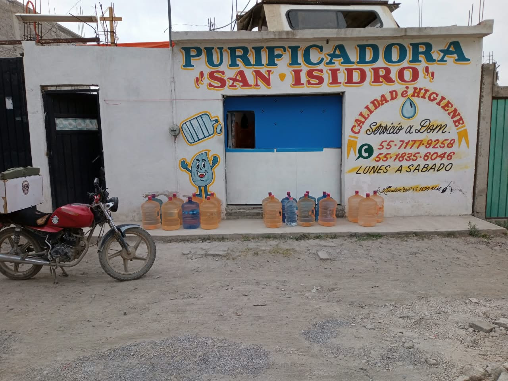
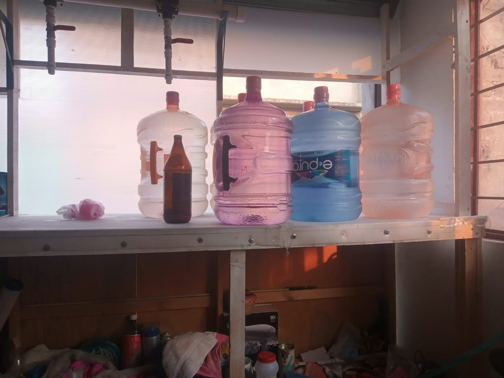
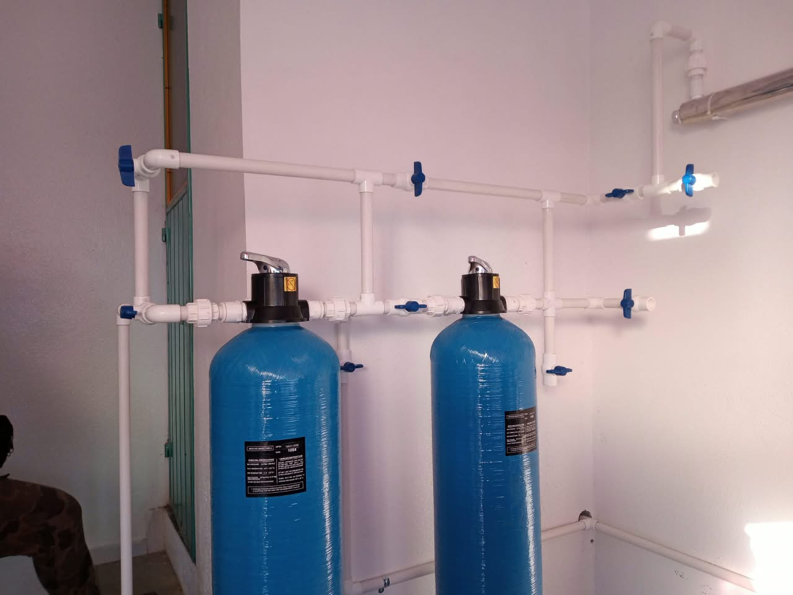

Purificadora de Agua
"San Isidro"
Inicio
Bienvenido a nuestra página oficial. Aquí encontrará información sobre nuestra purificadora, productos y servicio de entrega a domicilio.
Horario: Lunes a sábado de 9:00 A.M. a 6:00 P.M.
Ubicación: Municipio Chimalhuacán, Colonia Lomas de Buenavista, Calle Gardenia 2.
Somos un negocio familiar que atiende directamente a su colonia, sin intermediarios. Cada garrafón se lava, se purifica y se entrega por nosotros mismos.

Sobre nosotros
Purificadora de Agua "San Isidro" es un negocio familiar, establecido en febrero de 2021 por Armando Santibañez, Anayeli Escamilla y sus hijos, César Escamilla y Alex Escamilla (creador de esta página), quienes son los principales y únicos trabajadores.
Al principio nos costó conectar con las personas, pero poco a poco nos ganamos su confianza a través de un servicio honesto, confiable y cercano.
Nos esmeramos en dar un servicio de calidad, con agua limpia, precios justos y entrega puntual. Por eso, somos su mejor opción en Lomas de Buenavista y alrededores.
Misión y Visión
Misión
Brindar agua purificada de calidad, segura y a un precio justo a las familias de Lomas de Buenavista y Chimalhuacán, mediante un proceso de purificación transparente, un servicio honesto y una atención cercana y puntual.
Visión
Ser la purificadora de confianza de nuestra comunidad y crecer para llegar a más hogares, negocios y comercios, sin perder el trato directo que nos caracteriza desde 2021.
Productos y servicios
Precios fijos todo el año, sin anticipo. El costo a domicilio ya incluye la recolección y la entrega.
| Producto o servicio | Precio |
|---|---|
| Garrafón de 20 L - Llenado en planta | $20 |
| Garrafón de 20 L - Entrega a domicilio | $23 |
| Garrafón de 11 L - Llenado en planta | $12 |
| Garrafón de 11 L - Entrega a domicilio | $15 |
| Garrafón nuevo de 20 L (envase + liquido) | $120 |
Servicios incluidos:
Recolección de garrafones vacíos, lavado y desinfección de envases, llenado con agua purificada, sellado de garantía y entrega hasta la puerta de su casa.
Si su garrafón está dañado o tiene fuga, le avisamos antes de llenarlo.
Clientes y aliados
Trabajamos todos los días para familias y negocios de nuestra comunidad. La mayoría de nuestros clientes nos compran cada semana y son nuestra principal fuente de ventas.
Nuestros clientes
- Familias: Hogares de Lomas de Buenavista que consumen 2 a 6 garrafones por semana.
- Pequeños negocios Cocinas económicas que necesitan agua limpia para preparar alimentos.
- Comercios: Negocios que ofrecen agua purificada a sus clientes y empleados.
Nuestros aliados
No trabajamos solos. Nos apoyamos con los negocios y vecinos de la zona, quienes nos recomiendan, nos reciben en sus calles y nos permiten crecer poco a poco.
Gracias a esa confianza, seguimos siendo la purificadora de la colonia desde 2021.
Galería
Un vistazo a nuestro negocio, nuestro local y el trabajo que hacemos todos los días.
Fachada de la purificadora

Mostrador con garrafones llenos

Sistema de filtros de purificación
Si nos visitas, nos encuentras en Calle Gardenia 2, Lomas de Buenavista, Chimalhuacán.
Casos de éxito
Varios han sido los clientes que nos han comentado lo mismo, y nos enorgullece saber que ahora somos su preferencia
Nuestra clientela siempre nos menciona que su antiguo surtidor siempre les cambiaba los garrafones y que su agua tenia un sabor y olor a cloro, pero con la nuestra ya no pasa lo mismo, ya que la prefieren por su suavidad y pureza.
Nuestro caso de éxito: Empezamos en 2021 con pocos clientes y hoy surtimos a familias y negocios de toda la zona gracias a la recomendación de boca en boca.
Quejas o comentarios
Su opinión nos ayuda a mejorar. Si tuvo un problema con su entrega, con un garrafón o con el servicio, díganoslo y lo atendemos directamente.
Respondemos en un máximo de 24 horas en horario de servicio.
Contáctanos
Pedidos y dudas solo por WhatsApp. Escríbanos y le confirmamos su pedido, su horario de entrega y su total.
Horario: Lunes a sábado de 9:00 A.M. a 6:00 P.M.
Ubicación: Calle Gardenia 2, Lomas de Buenavista, Chimalhuacán.
Al dar clic se abrirá WhatsApp con el mensaje ya escrito, solo le da enviar.
Términos legales y aviso de privacidad
Última actualización: Noviembre 2026
1. Aviso de privacidad
Purificadora de Agua "San Isidro", ubicada en Calle Gardenia 2, Lomas de Buenavista, Chimalhuacán, es responsable de los datos personales que nos proporciona por WhatsApp o por el formulario de esta página.
Datos que recopilamos: Nombre, teléfono y dirección de entrega, únicamente para procesar su pedido y brindar el servicio de recolección y entrega a domicilio.
Uso: Sus datos no se venden, no se comparten con terceros y solo los usan los integrantes de la familia encargados de las entregas.
Usted puede pedir en cualquier momento que eliminemos sus datos escribiéndonos por WhatsApp.
2. Términos del servicio
Los precios mostrados en esta página son fijos y pueden cambiar sin previo aviso. La entrega a domicilio está sujeta a horario de servicio: lunes a sábado de 9:00 A.M. a 6:00 P.M.
El cliente es responsable de revisar su garrafón al momento de la entrega. Si presenta daño o fuga, debe reportarlo en ese momento.
El contenido de esta página es informativo. Purificadora "San Isidro" no se hace responsable por el uso incorrecto de la información aquí publicada.
3. Contacto para dudas legales
Para cualquier duda sobre este aviso, puede contactarnos por WhatsApp al 55 1835 6046 o al 55 7177 9258.
© 2026 Purificadora de Agua "San Isidro". Todos los derechos reservados.